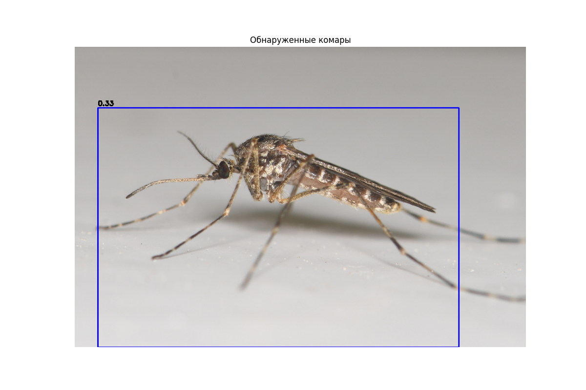
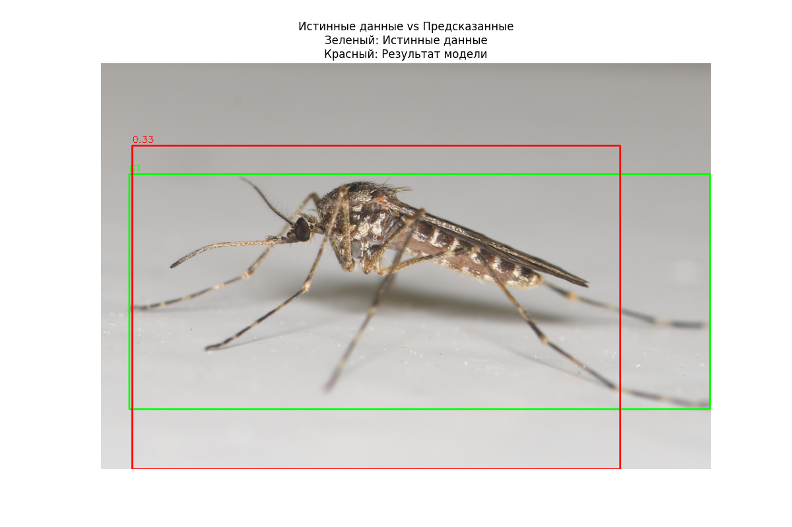

Note
Click here to download the full example code
Руководство по детекции комаров
Это руководство показывает, как использовать MosquitoDetector из библиотеки CulicidaeLab
для выполнения детекции объектов на изображениях. Мы рассмотрим:
- Загрузку модели детектора
- Подготовку изображения из набора данных
- Запуск модели для получения ограничивающих рамок
- Визуализацию результатов
- Оценку точности предсказаний
- Выполнение предсказаний на пакете изображений
Установите библиотеку culicidaelab, если она еще не установлена
!pip install -q culicidaelab
1. Инициализация
Сначала мы получим глобальный экземпляр settings и используем его для инициализации нашего MosquitoDetector.
Установив load_model=True, мы указываем детектору сразу же загрузить веса модели в память.
Если файл модели не существует локально, он будет загружен автоматически.
import cv2
import numpy as np
import matplotlib.pyplot as plt
from culicidaelab import get_settings
from culicidaelab import MosquitoDetector, DatasetsManager
# Получаем экземпляр настроек
settings = get_settings()
# Инициализируем менеджер наборов данных
manager = DatasetsManager(settings)
# Загружаем набор данных для детекции
detect_data = manager.load_dataset("detection", split="train[:20]")
# Создаем экземпляр детектора и загружаем модель
print("Инициализация MosquitoDetector и загрузка модели...")
detector = MosquitoDetector(settings=settings, load_model=True)
print("Модель успешно загружена.")
Out:
Cache hit for split config: train[:20] (key: 9e9940e1c673b6f0)
Инициализация MosquitoDetector и загрузка модели...
Weights file found at: C:\Users\lenova\AppData\Local\culicidaelab\culicidaelab\models\weights\detection\culico-net-det-v1-nano.pt
Модель успешно загружена.
2. Детекция комаров на изображении из набора данных
Теперь давайте используем изображение из набора данных для детекции и запустим на нем детектор.
Изучаем образец для детекции
detect_sample = detect_data[5]
detect_image = detect_sample["image"]
# Получаем истинные объекты (ground truth)
objects = detect_sample["objects"]
print(f"На этом изображении найдено {len(objects['bboxes'])} объект(ов).")
# Метод `predict` возвращает список обнаружений.
# Каждое обнаружение — это кортеж: (x1, y1, x2, y2, оценка_уверенности)
detections = detector.predict(detect_image)
# Метод `visualize` рисует ограничивающие рамки на изображении для удобной проверки.
annotated_image = detector.visualize(detect_image, detections)
# Отображаем результат
plt.figure(figsize=(12, 8))
plt.imshow(annotated_image)
plt.axis("off")
plt.title("Обнаруженные комары")
plt.show()
# Выводим численные результаты детекции
print("\nРезультаты детекции:")
if detections:
for i, (x1, y1, x2, y2, conf) in enumerate(detections):
print(
f" - Комар {i+1}: \
Уверенность = {conf:.2f}, \
Рамка = (x1={x1:.1f}, y1={y1:.1f}, x2={x2:.1f}, y2={y2:.1f})",
)
else:
print(" Комары не обнаружены.")

Out:
На этом изображении найдено 1 объект(ов).
C:/Users/lenova/CascadeProjects/culicidaelab/docs/ru/examples/tutorial_part_2_mosquito_detection.py:76: UserWarning: FigureCanvasAgg is non-interactive, and thus cannot be shown
plt.show()
Результаты детекции:
- Комар 1: Уверенность = 0.33, Рамка = (x1=51.5, y1=135.7, x2=851.1, y2=667.0)
3. Оценка предсказания с использованием истинных данных (Ground Truth)
Метод evaluate позволяет сравнить предсказание с истинными данными.
Это необходимо для оценки точности модели. Метод возвращает несколько метрик, которые является
стандартом для задач детекции объектов.
Теперь давайте сравним результаты модели с фактическими истинными данными из набора данных.
Извлекаем истинные рамки из образца набора данных
ground_truth_boxes = []
for bbox in objects["bboxes"]:
x_min, y_min, x_max, y_max = bbox
ground_truth_boxes.append((x_min, y_min, x_max, y_max))
# Оцениваем, используя истинные данные из набора данных
print("--- Оценка с использованием истинных данных из набора данных ---")
evaluation = detector.evaluate(ground_truth=ground_truth_boxes, prediction=detections)
print(evaluation)
Out:
--- Оценка с использованием истинных данных из набора данных ---
{'precision': 0.9999999989999999, 'recall': 1.0, 'f1': 0.9999999989999999, 'ap': 0.9999999989999999, 'mean_iou': 0.6381935477256775}
Можно такжк получить необходимые метрики, передав необработанное изображение. Детектор будет вызван
внутри метода evaluate.
print("\n--- Оценка напрямую из изображения ---")
evaluation_from_raw = detector.evaluate(ground_truth=ground_truth_boxes, input_data=detect_image)
print(evaluation_from_raw)
Out:
--- Оценка напрямую из изображения ---
{'precision': 0.9999999989999999, 'recall': 1.0, 'f1': 0.9999999989999999, 'ap': 0.9999999989999999, 'mean_iou': 0.6381935477256775}
4. Выполнение пакетных предсказаний на изображениях из набора данных
Для эффективности вы можете обрабатывать несколько изображений одновременно, используя predict_batch.
Извлекаем изображения из набора данных для детекции
image_batch = [sample["image"] for sample in detect_data]
# Запускаем пакетное предсказание
detections_batch = detector.predict_batch(image_batch)
print("Пакетное предсказание завершено.")
for i, dets in enumerate(detections_batch):
print(f" - Изображение {i+1}: Найдено {len(dets)} обнаружений.")
Out:
Пакетное предсказание завершено.
- Изображение 1: Найдено 1 обнаружений.
- Изображение 2: Найдено 1 обнаружений.
- Изображение 3: Найдено 1 обнаружений.
- Изображение 4: Найдено 1 обнаружений.
- Изображение 5: Найдено 1 обнаружений.
- Изображение 6: Найдено 1 обнаружений.
- Изображение 7: Найдено 1 обнаружений.
- Изображение 8: Найдено 1 обнаружений.
- Изображение 9: Найдено 1 обнаружений.
- Изображение 10: Найдено 1 обнаружений.
- Изображение 11: Найдено 1 обнаружений.
- Изображение 12: Найдено 1 обнаружений.
- Изображение 13: Найдено 1 обнаружений.
- Изображение 14: Найдено 1 обнаружений.
- Изображение 15: Найдено 1 обнаружений.
- Изображение 16: Найдено 1 обнаружений.
- Изображение 17: Найдено 1 обнаружений.
- Изображение 18: Найдено 1 обнаружений.
- Изображение 19: Найдено 1 обнаружений.
- Изображение 20: Найдено 1 обнаружений.
5. Оценка пакета предсказаний с использованием истинных данных из набора данных
Аналогично, evaluate_batch можно использовать для получения агрегированных метрик по всему набору данных.
Извлекаем истинные данные из набора данных для детекции
ground_truth_batch = []
for sample in detect_data:
boxes = []
for bbox in sample["objects"]["bboxes"]:
x_min, y_min, x_max, y_max = bbox
boxes.append((x_min, y_min, x_max, y_max))
ground_truth_batch.append(boxes)
# Вызываем evaluate_batch с истинными данными из набора данных
print("\n--- Оценка всего пакета с использованием истинных данных из набора данных ---")
batch_evaluation = detector.evaluate_batch(
ground_truth_batch=ground_truth_batch,
predictions_batch=detections_batch,
num_workers=2, # Используйте несколько потоков для ускорения обработки
)
print("Агрегированные метрики оценки пакета:")
print(batch_evaluation)
Out:
--- Оценка всего пакета с использованием истинных данных из набора данных ---
Агрегированные метрики оценки пакета:
{'f1_mean': 0.9999999989999999, 'f1_std': 0.0, 'recall_mean': 1.0, 'recall_std': 0.0, 'precision_mean': 0.9999999989999999, 'precision_std': 0.0, 'mean_iou_mean': 0.780258059501648, 'mean_iou_std': 0.11935859631699092, 'ap_mean': 0.9999999989999999, 'ap_std': 0.0, 'count': 20}
6. Визуализация истинных данных в сравнении с предсказаниями
Давайте создадим сравнительную визуализацию, показывающую как истинные данные, так и предсказания.
Создадим функцию для визуализации как истинных данных, так и предсказаний
def visualize_comparison(image_rgb, ground_truth_boxes, detection_boxes):
# Рисуем истинные рамки зеленым цветом
for bbox in ground_truth_boxes:
x_min, y_min, x_max, y_max = (int(v) for v in bbox)
cv2.rectangle(image_rgb, (x_min, y_min), (x_max, y_max), (0, 255, 0), 2)
cv2.putText(
image_rgb,
"GT",
(x_min, y_min - 5),
cv2.FONT_HERSHEY_SIMPLEX,
0.5,
(0, 255, 0),
1,
)
# Рисуем предсказанные рамки синим цветом с указанием показателя уверенности
for x1, y1, x2, y2, conf in detection_boxes:
x_min, y_min, x_max, y_max = int(x1), int(y1), int(x2), int(y2)
cv2.rectangle(image_rgb, (x_min, y_min), (x_max, y_max), (255, 0, 0), 2)
cv2.putText(
image_rgb,
f"{conf:.2f}",
(x_min, y_min - 5),
cv2.FONT_HERSHEY_SIMPLEX,
0.5,
(255, 0, 0),
1,
)
return image_rgb
# Создаем сравнительную визуализацию
comparison_image = visualize_comparison(np.array(detect_image), ground_truth_boxes, detections)
# Отображаем сравнение
plt.figure(figsize=(12, 8))
plt.imshow(comparison_image)
plt.axis("off")
plt.title("Истинные данные vs Предсказанные\nЗеленый: Истинные данные\nКрасный: Результат модели")
plt.show()

Out:
C:/Users/lenova/CascadeProjects/culicidaelab/docs/ru/examples/tutorial_part_2_mosquito_detection.py:207: UserWarning: FigureCanvasAgg is non-interactive, and thus cannot be shown
plt.show()
Total running time of the script: ( 0 minutes 6.966 seconds)
Download Python source code: tutorial_part_2_mosquito_detection.py
Download Jupyter notebook: tutorial_part_2_mosquito_detection.ipynb